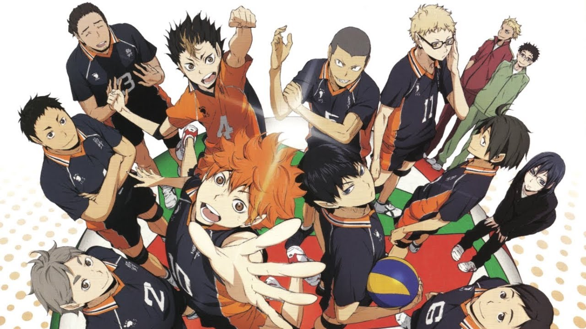
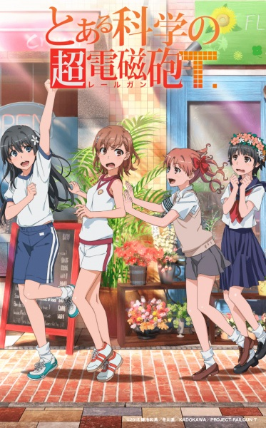
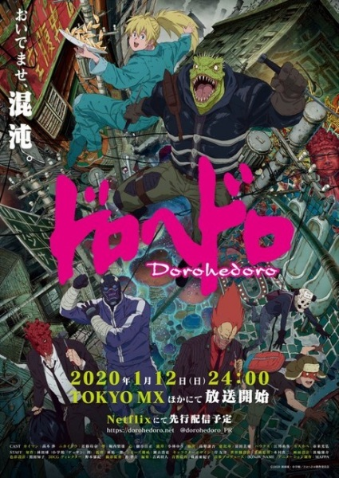

Haikyuu!!: To the Top
Um evento do acaso despertou o amor de Hinata Shouyou por voleibol. Seu clube não tinha membros, mas de alguma forma perseverou e finalmente chegou ao seu primeiro e último jogo normal do ensino fundamental, onde ele foi atropelado por Kageyama Tobio – um jogador exemplar conhecido como “Rei da Quadra”.
Boku no Hero Academia 4th Season
Com All for One fora do jogo, o mundo do mal está à beira de uma guerra. Shigaraki, da Liga dos Vilões, e Overhaul, da yakuza, disputam o domínio do submundo.

Toaru Kagaku no Railgun T
A série é um spin-off da série To Aru Majutsu no Railgun que conta a história do ponto de vista da heroína Misaka e suas amigas

Dorohedoro
Em uma cidade sombria, conhecida apenas como “O Buraco”, um clã de feiticeiros tem arrancado as pessoas das ruas para usá-las como cobaias em atroz “experimentos”.
BanG Dream! 3rd Season
Kasumi decide formar uma banda feminina liderando quatro garotas que têm a mesma determinação que ela: Saya, Arisa, Rimi, e Tae. Será que essa banda terá o necessário para alcançar o sucesso buscado pelo grupo?”